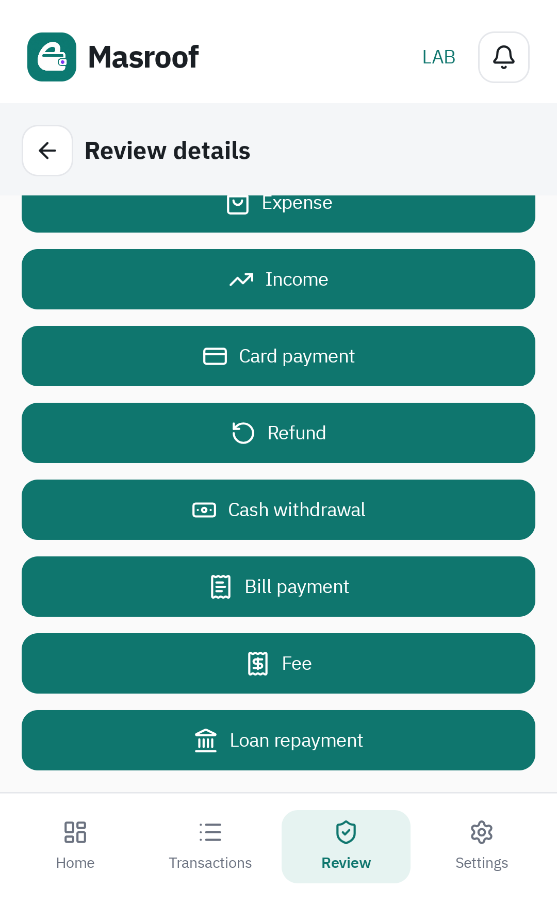

فصل ml-assist وتنظيف مدخلات النموذج
اكتمل الفصل داخل المختبر. لا قدرات إضافية ولا تغيير لسياسة المراجعة والتسجيل.
ملفات التطبيق الفعلي وواجهة ui-kit لم تتغير. لا ترحيل أو تعديل لمخطط القاعدة المالية: بقيت ١٤ جدولًا ماليًا وجدولا التعلّم المساعدان الموجودان سابقًا. الدخول ما زال من إعدادات المطورين في الحزمة الحالية.
هذا التقرير يكمّل تقرير نسخ دورة حياة الفعلي ويحدّث وصف ML وتوزيع ملفاته.
المسؤوليات والاعتمادات
beta → bank-engine → finance-core └──→ ml-assist BankEngine: normalization, LessCode extraction, validation ML-assist: cleansing, features, model, trusted learning, evaluation Beta: explicit adapter, Android storage, work scheduling, financial workflows
لا يعتمد المحرك على وحدة ML، ولا تعتمد ML على المحرك أو Android أو مستودعات الحركات. بقيت finance-core لعقود القيم المشتركة؛ الحسابات المالية تستمر عبر نسخة مسار الفعلي داخل المختبر.
| قبل | بعد |
|---|---|
| النموذج والمصنّف والخصائص داخل bank-engine | نقلت إلى lab/ml-assist، وحذفت النسخ القديمة وأداة التدريب السابقة. |
| المصنّف يستقبل نص الرسالة | يستقبل CleanFamilyFeatures فقط. يملك beta التحويل الصريح بين تصنيفات النموذج والمحرك. |
| تجهيز ضمني للخصائص | مرحلة تنظيف بإصدار محدد مشتركة للتدريب والتنبؤ وقرارات المستخدم. |
| التجميع باسم التصنيف والقالب | التجميع بالقالب قبل النظر إلى التصنيف؛ التعارض يُستبعد، ولا يعبر القالب بين التدريب والاختبار. |
| اختيار الأنواع بالتحقق والاختبار معًا | الاختيار من التحقق فقط ضمن الأنواع المفعلة سابقًا؛ الاختبار تقرير مستقل لا يختار الإعدادات. |
ما الذي يدخل النموذج؟
يجهّز المحرك عنوان الرسالة وأسماء الحقول بتطبيعه الحالي. المنظّف يحوّلها إلى كلمات وبنية آمنة، ثم خصائص رقمية. قيم المبالغ والأرصدة والأسماء والحسابات والبطاقات والمراجع والروابط لا تدخل خصائص التصنيف. تبقى أدلة الرسالة الأصلية داخل المختبر لاستخراج المبلغ والحساب وعرضهما.
| مثال اصطناعي قبل التنظيف | المدخل المستخدم |
|---|---|
حَوَالَة مَحَلِّيَّة وَارِدَة | عنوان: «حوالة محلية واردة». أسماء الحقول المعروفة فقط. لا اسم المرسل ولا رقم الحساب ولا المبلغ. |
اسم المستفيد: Sarah Example | «اسم المستفيد»؛ القيمة الشخصية مستبعدة. |
one time password for online purchase: 482913 | تبقى password وكلمات نوع الرسالة؛ يُحذف الرمز. لا تُعامل كشراء مالي بسبب تشابه الكلمات. |
شراء محمد | امتناع: كلمة غير معروفة في عنوان لا يمكن فصل قيمه بثقة. لا تُحذف الكلمة لتمرير شراء مبهم. |
توحّد المسافات وتزال محارف التنسيق الخفية؛ يبقى النفي والرفض والإلغاء والتحقق. لا يوجد حذف عام للكلمات الشائعة. الكلمات الهيكلية المعروفة تخضع لقائمة مراجعة؛ توسيعها مستقبلًا يحتاج مراجعة وإصدارًا جديدًا، ولا يُدّعى أن هذا تنظيف عام لكل النصوص أو كل البنوك.
التعلّم والإصدارات والعودة الآمنة
- لا تدريب على اقتراحات النموذج؛ المصادر قرارات بشرية صريحة. أحدث قرار لكل رسالة هو المعتمد.
- قالب متعارض: لا اقتراح تلقائي ولا إدخاله إلى العدّ الإحصائي. تكرار القالب نفسه لا يضاعف وزنه.
- ModelManifest مستخدم عند التحميل للتحقق من المهمة والإصدارات والأنواع المفعلة ومرجع التقييم. لم تضف شاشة كتالوج أو نماذج فارغة.
- الكاش القديم غير متوافق فيُرفض؛ يعاد بناء الخصائص من القرارات الأصلية المحفوظة. تم اختبار هذا فعليًا على Android مع بقاء الحركات السابقة دون تغيير.
- التعطل يبقي القواعد متاحة؛ لا ينشئ قاعدة مالية بديلة ولا يمسح قرارات المستخدم. استبدال صفوف التعلّم يتم بمعاملة بعد بناء المرشح والتحقق منه.
family-nb-v2-3e5e3449be7831basms-family-clean-v1 / bank-family-title-v2القدرة الإحصائية المفعلة بقيت TRANSFER_IN. تعلّم قالب القسط من قرار بشري هو ذاكرة قرار مؤكد، وليس ادعاء وجود نموذج إحصائي للقروض.
التقييم وحدوده
٥٠ مثالًا، ٣٤ مجموعة قالب: ٢٢ تدريب، ٦ تحقق، ٦ اختبار. لا أمثلة مرفوضة أو مجموعات متعارضة في هذا corpus الحالي؛ حالات الرفض والتعارض مغطاة باختبارات اصطناعية مستقلة.
التصنيف الخام: 7 من ١٢ قبل التنظيف و7 من ١٢ بعده. بقيت الأخطاء الخام المحجوبة موجودة، ومنها تشابه OTP مع الشراء؛ لذلك لا تمثل الدرجة الاحتمالية إثبات صحة ولا يفعّل هذا العمل أنواعًا جديدة. مع بوابات الأنواع والحدود، قُبلت 1 حالة صحيحة من holdout، وامتنع الباقي. حالة الحوالة الجديدة في قبول الجهاز مثال تطويري إضافي وليست اختبار دقة مستقلًا.
تقييم النموذج الحالي · التقييم السابق · تقسيم البيانات المجمد
أدلة القبول
نجح بناء APK وlintDebug وdetekt وlintAfterDebug. اجتازت رحلة الإعداد والمراجعة والملكية وإعادة الفتح والمقارنة المالية اختبارات الجهاز.
أربع حالات ML حقيقية: حوالة جديدة عبر النموذج؛ قسط يتعلم من قرار يدوي ويستمر بعد إعادة الفتح؛ فساد الكاش مع سلامة الحركات؛ كاش قديم يعاد بناؤه دون تغيير الحركات المسجلة.
نتائج JVM بالتفصيل · نتيجة Android · سجل الجهاز والبناء والتحليل · إعادة إنتاج النموذج · التحقق النهائي من حدود الربط · قائمة الملفات المنقولة والمضافة والمحذوفة



الملفات الأساسية
lab/ml-assist/: المصنّف والنموذج والمنظّف والعقود والتعريف وأدوات التدريب والتقييم.lab/bank-engine/: تجهيز النص بالمطبّع الحالي، وواجهة المساعدة، دون تنفيذ ML.lab/beta/: الربط والتخزين وإعادة بناء التعلّم واختبارات التكامل. لا تغيير لشاشات المنتج.
النطاق هذه الدفعة: الفصل والتنظيف. التصنيفات الشخصية والتوقعات واكتشاف المتكرر وتحويل ML إلى وضع اقتراح فقط مؤجلة. طلب الدمج #306؛ لا دمج أو إصدار تلقائي.